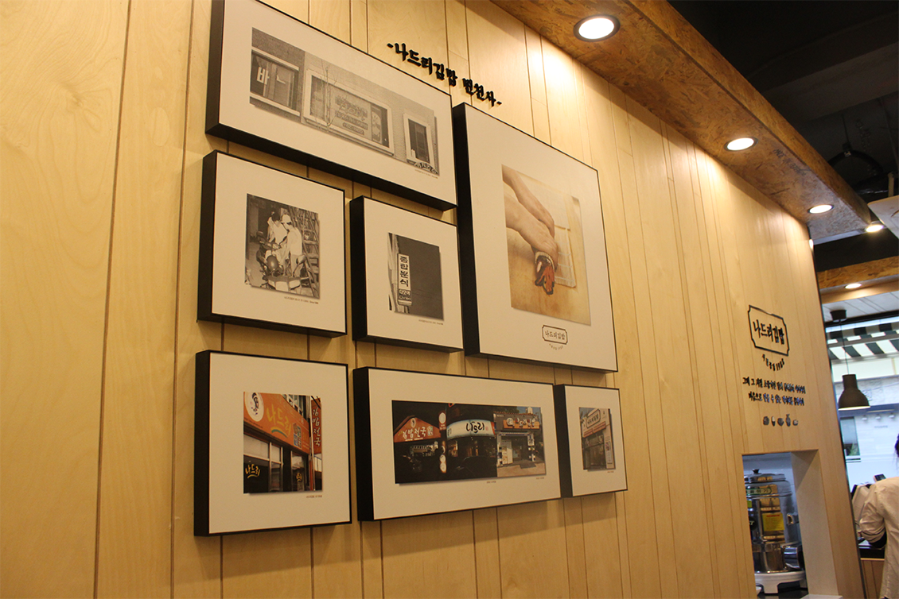

나드리 소식
나드리 김밥의 따끈따끈한 새로운 소식
새로운 메뉴, 매장들을
확인하실 수 있으며, 여러가지 공지사항도 함께 알려드립니다.
나드리 김밥 신규 매장 리뉴얼 5월 오픈 예정
2016. 12. 31.

나드리 김밥 신규 매장 리뉴얼 5월 오픈 예정
나드리 김밥 신규 매장 리뉴얼 5월 오픈 예정
나드리 김밥은 매년 1회 우수사원들을 선발해 해외연수를 실시하여 선진 요리기법전수, 신메뉴 및 식재료 연구, 그리고 고객서비스에 대한 심도 깉은 연수가 진행되었으며, 앞으로도
지속적인 연구와 직원 교육을 통해 더 나은 맛과 서비스를 고객님들께 제공하도록 하겠습니다.